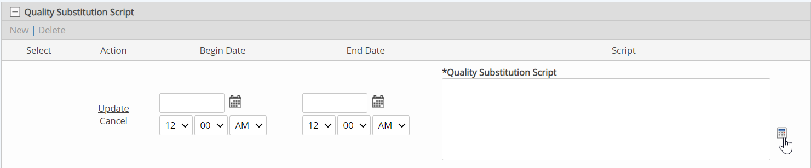
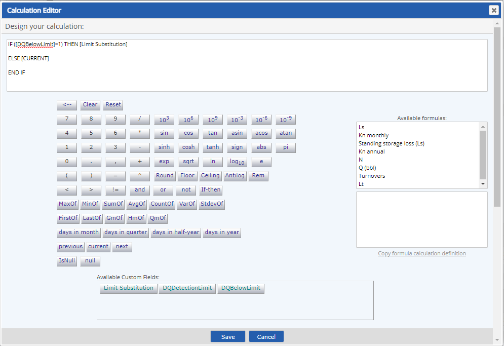
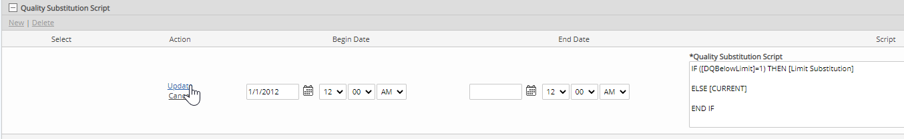

Parameters may have an optional data substitution script attached to them. The quality substitution script may take as input any of the numeric or Boolean fields on the Data Quality Template for the parameter.
When a data substitution is attached to a parameter, the substituted value produced by the substitution script is stored as the "real" data point which is used in subsequent calculations. However, the raw value is also stored and may be viewed.
If any data quality field value is empty, it is treated as 0 for calculation purposes in the substitution script.
The NEXT, PREV and CURRENT functions are available for use in data substitution scripts. These fields return the next, previous or current raw values of the parameter, relative to the date/time of the data point.
To define a data substitution script:
In the Quality Template section of the properties page for the parameter requirement, select the Data Quality Templates from the dropdown list.
The numeric and Boolean fields on the template appear as Calculation Parameters for the Quality Substitution Script.
Click the plus sign (+) to expand the Quality Substitution Script section.
Click New.
Click the calculator button to access the calculation builder.

Use the calculator to build the substitution script. The calculation parameters from the template are available for use as input in the formula.

Enter a Begin Date for the formula and click Update to save the value.
